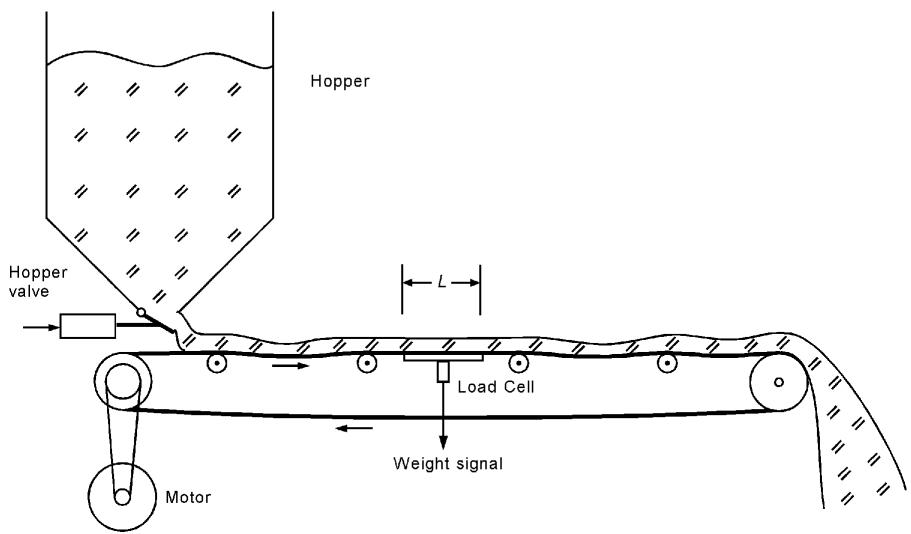
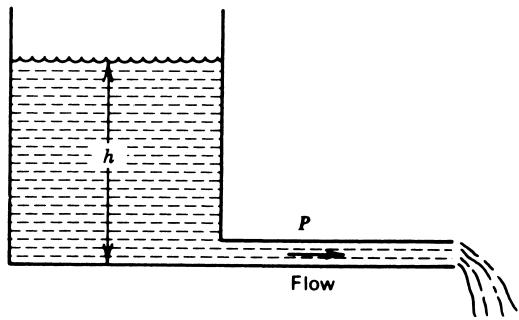
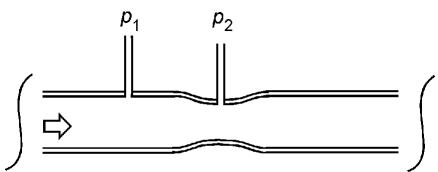
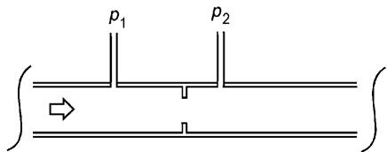
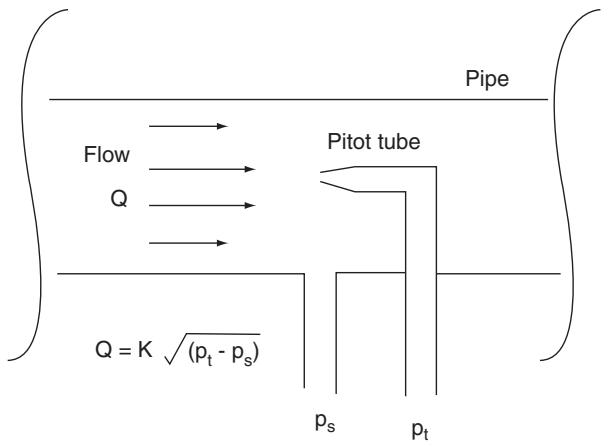
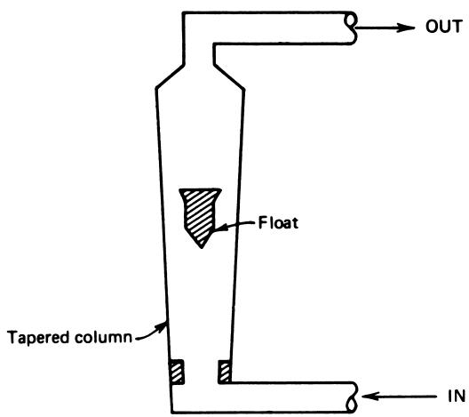
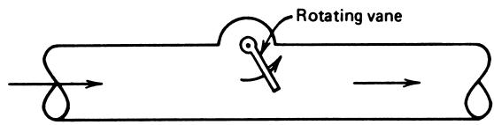
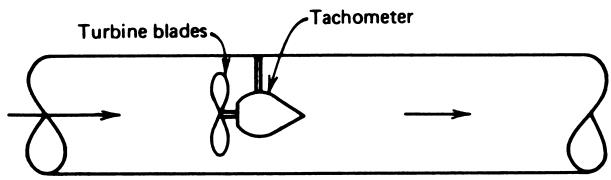
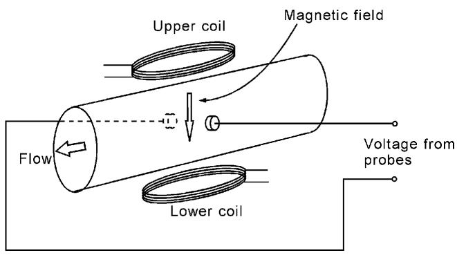

Flow Sensors
Instruments 5.3
Imron Rosyadi
Learning Objectives
By the end of this session, you should be able to:
- Distinguish between solid, liquid, and gas flow measurements in industrial systems.
- Explain how conveyor‑belt solid‑flow sensors work and compute mass flow from basic measurements.
- Define and convert between common liquid flow units: volume flow, velocity, and mass/weight flow.
- Describe and apply the restriction (differential‑pressure) method for measuring liquid flow in pipes.
- Explain how pitot tubes, obstruction meters (rotameter, vane, turbine), and magnetic flow meters operate.
- Relate the physical sensor outputs (load cell, LVDT, DP cell, etc.) to electrical signals for use in control systems.
Why Flow Measurement Matters in ECE & Industry
- Process industries run on moving material:
- Crude oil in pipelines
- Cooling water in power plants
- Slurries in mineral processing
- Air/fuel in automotive engines
- Control goals often expressed in terms of flow:
- Maintain \(150\ \mathrm{gal/min}\) of cooling water
- Keep blood flow in a medical pump within safe limits
- Deliver accurate fuel mass flow to an engine cylinder
- For ECE:
- Sensors → signal conditioning → data acquisition → digital control systems
Important
Flow is rarely measured “directly.” It is usually inferred from another measurable quantity such as weight, velocity, pressure drop, rotation speed, or induced voltage.
Three Broad Flow Categories
- Solid flow
- Discrete items (cars on an assembly line)
- Granular solids or powders on conveyors (coal, grain, cement, pellets)
- Liquid flow
- Water, oils, chemicals in pipes and channels
- Gas flow
- Air, natural gas, exhaust gases, compressed air
We will focus on:
- Solid‑flow on conveyors.
- Liquid flow in pipes, including several sensor types.
6.1 Solid‑Flow Measurement: Conveyor Systems
Solid material can flow in several ways:
- On conveyor belts (crushed ore, coal, packaged products).
- Suspended as particles in a liquid host, forming a slurry (treated as liquid flow).
For conveyors with granular solids or powders, we are typically interested in mass (or weight) flow rate:
- kg/min, kg/h
- lb/min, lb/h
Key idea:
Measure how much mass is on a known length of conveyor, and use belt speed to compute mass flow per unit time.
Conveyor Belt Flow Concept
Definitions
- \(W\) — weight of material on a section of belt of length \(L\) (kg or lb)
- \(R\) — belt speed (m/min or ft/min)
- \(L\) — length of weighing platform (m or ft)
- \(Q\) — flow (kg/min or lb/min)
Formula
\[ Q = \frac{W R}{L} \tag{34} \]
Interpretation:
- \(W/L\) = weight per unit length of belt.
- Multiply by \(R\) (length per unit time) → weight per unit time.

Conveyor Flow: Sensor Implementation
- The “flow sensor” is a system:
- Hopper + valve (controls how much falls on the belt).
- Conveyor with known speed \(R\).
- Weighing platform of length \(L\).
- The transducer on the platform:
- Load cell (strain gauge) → measures deflection due to weight.
- Or LVDT → measures displacement (droop) of the belt.
Signal chain:
Example 18 – Coal Conveyor Flow
A coal conveyor system moves at \(100\ \mathrm{ft/min}\). The weighing platform is \(5.0\ \mathrm{ft}\) long, and a particular weighing shows that \(75\ \mathrm{lb}\) of coal are on the platform.
Find: coal delivery in \(\mathrm{lb/h}\).
Given:
- \(R = 100\ \mathrm{ft/min}\)
- \(L = 5.0\ \mathrm{ft}\)
- \(W = 75\ \mathrm{lb}\)
Example 18 – Solution
Use Equation (34):
\[ Q = \frac{W R}{L} \]
Substitute values:
\[ Q = \frac{(75\ \mathrm{lb})(100\ \mathrm{ft/min})}{5\ \mathrm{ft}} \]
\[ Q = 1500\ \mathrm{lb/min} \]
Convert to \(\mathrm{lb/h}\):
\[ Q = 1500\ \mathrm{lb/min} \times 60\ \mathrm{min/h} = 90{,}000\ \mathrm{lb/h} \]
Answer: \(Q = 9.0 \times 10^4\ \mathrm{lb/h}\).
Tip
Check units carefully:
- ft cancels in \(W R / L\), leaving lb/min.
- Then multiply by 60 to get lb/h.
6.2 Liquid Flow – Overview
Liquid flow measurement is central in:
- Chemical plants, refineries.
- Water and wastewater treatment.
- Power plants (cooling water, boiler feed).
- Food and pharmaceutical industries.
Challenge:
- Many fluid types (water, oil, corrosive chemicals, slurries).
- Wide ranges of pressure, temperature, viscosity.
- Different line sizes and materials.
We will cover basic ideas and common measurement approaches, not full fluid mechanics.
Common Liquid Flow Descriptions
Three primary ways to describe liquid flow:
- Volume flow rate
- Flow velocity
- Mass or weight flow rate
Each is useful for different engineering tasks. ECE students should be comfortable converting among them, because sensors often measure one while the process cares about another.
Volume Flow Rate
- Definition: volume delivered per unit time.
- Typical units:
- \(\mathrm{gal/min}\)
- \(\mathrm{m^3/h}\)
- \(\mathrm{ft^3/h}\)
- Conversion:
- \(1\ \mathrm{gal} = 231\ \mathrm{in^3}\)
Used when tank levels, mixing ratios, and pipeline capacities are more about how much volume per time than about mass.
Flow Velocity
Flow velocity \(V\) is how fast the fluid moves along the pipe:
- Units: m/s, ft/s, m/min, ft/min.
Relationship to volume flow rate:
\[ V = \frac{Q}{A} \tag{35} \]
Where:
- \(V\) = flow velocity
- \(Q\) = volume flow rate
- \(A\) = cross‑sectional area of the pipe
Equivalently:
\[ Q = V A \]
Note
For a given pipe size, measuring velocity is equivalent to measuring volume flow. Many flow sensors are fundamentally velocity sensors (pitot tube, turbine meter) that are then converted to volume flow using \(Q = V A\).
Mass or Weight Flow Rate
Mass/weight flow rate \(F\) is mass (or weight) per unit time:
- Units: kg/h, kg/s, lb/h, lb/min.
Related to volume flow via fluid density:
\[ F = \rho Q \tag{36} \]
Where:
- \(F\) = mass or weight flow rate
- \(\rho\) = mass or weight density (e.g., \(\mathrm{kg/m^3}\) or \(\mathrm{lb/ft^3}\))
- \(Q\) = volume flow rate
When density is approximately constant (e.g., water at moderate temperatures), this relationship is straightforward.
Important
Control applications that care about energy or chemical reaction stoichiometry (e.g., fuel feed, reactant dosing) often need mass flow, not just volume flow.
Example 19 – From Velocity to Volume & Weight Flow
Water is pumped through a \(1.5\ \mathrm{in}\) diameter pipe with a flow velocity of \(2.5\ \mathrm{ft/s}\).
Given:
- Pipe diameter \(d = 1.5\ \mathrm{in}\)
- Velocity \(V = 2.5\ \mathrm{ft/s}\)
- Water weight density \(\rho = 62.4\ \mathrm{lb/ft^3}\)
Find:
- Volume flow rate \(Q\) in \(\mathrm{ft^3/min}\).
- Weight flow rate \(F\) in \(\mathrm{lb/min}\).
Example 19 – Solution (Step 1: Cross‑Sectional Area)
Convert diameter to feet:
\[ d = 1.5\ \mathrm{in} \times \frac{1\ \mathrm{ft}}{12\ \mathrm{in}} = 0.125\ \mathrm{ft} \]
Area of circular pipe:
\[ A = \frac{\pi d^2}{4} \]
Compute:
\[ A = \frac{(3.14)(0.125)^2}{4} = 0.0122\ \mathrm{ft^2} \quad (\text{approximately}) \]
Example 19 – Solution (Step 2: Volume Flow Rate)
Use \(Q = V A\):
\[ Q = (2.5\ \mathrm{ft/s})(0.0122\ \mathrm{ft^2}) \]
Convert seconds to minutes:
\[ Q = (2.5\ \mathrm{ft/s})(0.0122\ \mathrm{ft^2})(60\ \mathrm{s/min}) \]
\[ Q \approx 1.8\ \mathrm{ft^3/min} \]
Optional: Convert to gallons per minute (gpm):
- \(1\ \mathrm{ft^3} \approx 7.48\ \mathrm{gal}\)
\[ 1.8\ \mathrm{ft^3/min} \approx 1.8 \times 7.48 \approx 13.5\ \mathrm{gal/min} \]
Example 19 – Solution (Step 3: Weight Flow Rate)
Use Equation (36):
\[ F = \rho Q \]
Substitute:
\[ F = (62.4\ \mathrm{lb/ft^3})(1.8\ \mathrm{ft^3/min}) \]
\[ F \approx 112\ \mathrm{lb/min} \]
Answer:
- \(Q \approx 1.8\ \mathrm{ft^3/min} \approx 13.5\ \mathrm{gal/min}\)
- \(F \approx 112\ \mathrm{lb/min}\)
Pipe Flow and Pressure Head
Liquid flow in pipes is driven mainly by pressure difference:
- Pressure can be expressed as head, \(h\), equivalent height of a liquid column.
- In a tank feeding a pipe at its bottom, head is the height \(h\) of the liquid above the outlet.

Many factors affect the actual flow rate:
- Viscosity of liquid.
- Pipe size and roughness.
- Turbulence vs laminar flow.
- Fittings, bends, valves, etc.
Our focus: How to measure flow, not to model all of these details.
Restriction Flow Sensors – Basic Principle
One of the most common liquid flow measurement methods:
- Insert a restriction in the pipe (venturi, nozzle, or orifice plate).
- Flow speeds up through the restriction → static pressure drops.
- Measure pressure drop \(\Delta p = p_1 - p_2\) across the restriction.
Empirically, we have:
\[ Q = K \sqrt{\Delta p} \tag{37} \]
Where:
- \(Q\) = volume flow rate.
- \(\Delta p\) = pressure drop across restriction.
- \(K\) = constant depending on liquid, pipe size, restriction geometry, temperature, etc.
Warning
Flow rate is proportional to the square root of pressure drop. Doubling \(\Delta p\) does not double \(Q\); it increases \(Q\) by \(\sqrt{2} \approx 1.414\).
Common Restriction Types

- Smoothly tapered constriction.
- Low energy loss.
- More expensive, bulkier.

- Flat plate with a sharp‑edged hole.
- Cheap, easy to install.
- Higher permanent pressure loss.
From Flow to Electrical Signal – DP Cells
Measurement chain for restriction flow sensors:

- DP cell = Differential Pressure cell.
- Uses bellows, diaphragms, or capsules.
- \(\Delta p\) → mechanical displacement.
- LVDT or strain gauge then converts displacement → voltage or current.
Example 20 – Orifice Plate with LVDT Output
Flow is to be controlled from \(20\) to \(150\ \mathrm{gal/min}\).
- Flow measured using an orifice plate as in Figure 39c.
- Orifice plate obeys \(Q = K \sqrt{\Delta p}\).
- \(K = 119.5\ (\mathrm{gal/min})/\mathrm{psi}^{1/2}\).
- A bellows + LVDT measure the pressure: LVDT sensitivity \(= 1.8\ \mathrm{V/psi}\).
Find: range of voltages corresponding to \(Q\) from \(20\) to \(150\ \mathrm{gal/min}\).
Example 20 – Solution (Step 1: Find Pressure Range)
Start with:
\[ Q = K \sqrt{\Delta p} \Rightarrow \sqrt{\Delta p} = \frac{Q}{K} \]
So:
\[ \Delta p = \left(\frac{Q}{K}\right)^2 \]
For \(Q = 20\ \mathrm{gal/min}\):
\[ \Delta p = \left(\frac{20}{119.5}\right)^2 \approx 0.0280\ \mathrm{psi} \]
For \(Q = 150\ \mathrm{gal/min}\):
\[ \Delta p = \left(\frac{150}{119.5}\right)^2 \approx 1.5756\ \mathrm{psi} \]
Example 20 – Solution (Step 2: Convert Pressure to Voltage)
LVDT output: \(1.8\ \mathrm{V/psi}\).
For \(Q = 20\ \mathrm{gal/min}\):
\[ V = 0.0280\ \mathrm{psi} \times 1.8\ \mathrm{V/psi} \approx 0.0504\ \mathrm{V} \]
For \(Q = 150\ \mathrm{gal/min}\):
\[ V = 1.5756\ \mathrm{psi} \times 1.8\ \mathrm{V/psi} \approx 2.836\ \mathrm{V} \]
Voltage range: approximately \(0.05\ \mathrm{V}\) to \(2.84\ \mathrm{V}\) for flows from \(20\) to \(150\ \mathrm{gal/min}\).
Tip
In practice, a transmitter or controller often linearizes the \(\sqrt{\Delta p}\) relationship so that its electrical output is more directly proportional to flow \(Q\).
Pitot Tube – Point Velocity Measurement

Principle:
- Tube opening faces into flow, bringing fluid to rest (stagnation point) inside the tube.
- Stagnation pressure inside pitot tube = static pressure + dynamic pressure term related to velocity.
- Measure differential pressure between:
- Stagnation pressure in pitot tube.
- Static pressure in surrounding fluid.
Result:
- Differential pressure \(\Delta p\) is proportional to \(V^2\).
- Thus \(V \propto \sqrt{\Delta p}\).
Obstruction Flow Sensors – Overview
Instead of measuring pressure drop in a restriction, we can directly use the force of the fluid on an obstruction.
Three common types:
- Rotameter (variable area meter).
- Moving vane flow meter.
- Turbine flow meter.
All introduce some obstruction into the flow, so they are used when that is acceptable.
Rotameter - Variable Area Flow Meter

- Vertical tapered tube (wider at top, narrower at bottom).
- Float placed inside tube; fluid flows upward.
- Flow increases → lifting force increases → float rises.
- Float stabilizes where gravitational force balances fluid forces.
- Float height is proportional to flow rate.
Typical use:
- Local indication (scale engraved on the tube).
- Can be equipped with position sensors for electrical output.
Moving Vane Flow Meter

- A vane (like a small flap) is immersed in the flow.
- As flow velocity increases, drag force on vane increases.
- Vane is rotated out of flow; its angle is related to flow rate.
- Attach vane shaft to an angle sensor (potentiometer, encoder, resolver) → electrical signal.
Used where moderate obstruction is acceptable and where relatively simple mechanics are preferred.
Turbine Flow Meter

- Freely spinning turbine wheel placed in the flow path.
- Flow torque rotates turbine; rotational speed \(\omega\) is proportional to flow velocity.
- Typical transduction:
- Magnetic or optical pickup measures blade passage frequency.
- Output: frequency or voltage proportional to volume flow \(Q\).
Advantages:
- Good accuracy over wide range.
- Direct electrical signal (especially frequency) suitable for digital counting.
Limitations:
- Moving parts → wear and maintenance.
- Requires some straight pipe lengths upstream/downstream.
Magnetic Flow Meter – Principle

Based on electromagnetic induction:
- If a conductive fluid moves through a magnetic field \(\vec{B}\), charges experience a Lorentz force.
- This induces a voltage across the pipe, perpendicular to both \(\vec{B}\) and the velocity \(\vec{V}\).
Magnitude of induced voltage \(E\) is proportional to flow velocity:
\[ E \propto B L V \]
where \(L\) is distance between electrodes.
Because pipe cross‑section is fixed, \(V \propto Q\), so:
\[ E \propto Q \]
Key design requirements:
- Pipe and liner must be nonconductive, so current cannot short the induced voltage.
- Fluid itself must be conductive (e.g., blood, salt water, many slurries).
Note
Magnetic flow meters are non‑intrusive: no moving parts, minimal pressure drop, and the flow tube can be full bore. Ideal for dirty or corrosive fluids, and even biological flows like blood (as noted in the figure caption).
Summary / Key Points
- Solid flow on conveyors
- Flow \(Q\) (mass/time) computed as \(Q = \dfrac{W R}{L}\).
- Flow measurement becomes weight measurement via load cells or LVDTs.
- Liquid flow
- Described via volume flow rate \(Q\), velocity \(V\), and mass/weight flow rate \(F\).
- Key relations: \(Q = V A\) and \(F = \rho Q\).
- Restriction flow sensors (venturi, nozzle, orifice)
- Use pressure drop: \(Q = K \sqrt{\Delta p}\).
- Differential pressure (DP) cells plus LVDTs/strain gauges convert \(\Delta p\) to voltage.
- Pitot tubes
- Measure local flow velocity from differential pressure.
- Obstruction meters (rotameter, moving vane, turbine)
- Use the mechanical effect of flow on floats, vanes, or turbines.
- Magnetic flow meters
- Rely on electromagnetic induction in conductive fluids.
- Direct, linear electrical signal; no moving parts, minimal pressure loss.
Formulas Summary
Conveyor solid flow
\[ Q = \frac{W R}{L} \]
- \(Q\) = flow (kg/min or lb/min)
- \(W\) = weight on platform section (kg or lb)
- \(R\) = conveyor speed (m/min or ft/min)
- \(L\) = length of weighing platform (m or ft)
Volume flow / velocity
\[ Q = V A \quad\text{and}\quad V = \frac{Q}{A} \]
- \(Q\) = volume flow rate (\(\mathrm{m^3/s}\), \(\mathrm{ft^3/min}\), etc.)
- \(V\) = flow velocity (m/s, ft/s)
- \(A\) = cross‑sectional area of pipe (\(\mathrm{m^2}\), \(\mathrm{ft^2}\))
For circular pipe:
\[ A = \frac{\pi d^2}{4} \]
Mass / weight flow
\[ F = \rho Q \]
- \(F\) = mass or weight flow rate (kg/s, lb/min)
- \(\rho\) = mass or weight density (\(\mathrm{kg/m^3}\), \(\mathrm{lb/ft^3}\))
- \(Q\) = volume flow rate
Restriction (DP) flow meter
\[ Q = K \sqrt{\Delta p} \]
- \(Q\) = volume flow rate
- \(\Delta p\) = pressure drop across restriction (psi, Pa)
- \(K\) = constant depending on fluid, temperature, geometry
Pitot tube and dynamic effects
- \(V \propto \sqrt{\Delta p}\) (velocity proportional to square root of differential pressure).
Magnetic flow meter (conceptual)
- \(E \propto B L V\) and, for a given pipe, \(E \propto Q\).